Supplied unofficial study solution, not an official GTU answer key. Answers and teaching diagrams have not been independently verified. Use Enlarge image for small details.આ આપેલો બિનસત્તાવાર અભ્યાસ ઉકેલ છે, સત્તાવાર GTU જવાબવહી નથી. જવાબો અને આકૃતિઓની સ્વતંત્ર ચકાસણી થઈ નથી. વાંચવા માટે ચિત્ર મોટું કરો.
Electrical Machines – II
Q1 · Single phase motors and 3 phase torque
Q.1 (a) List the application of various single phase induction motor. (3 marks)Q.1 (a) List the application of various single phase induction motor. (3 marks)3 marks૦૩ ગુણ
Single phase motors are chosen by starting need, cost and noise.
| Type | Typical application | Why |
|---|---|---|
| Split phase | Washing machine drain pump, small lathe, drill press | Low start torque enough, cheap |
| Capacitor start induction run | Air compressor, water pump, refrigerator compressor | Higher start torque 2 to 3 times |
| Capacitor start capacitor run | Submersible pump, heavy conveyor | High torque plus smooth running |
| Permanent capacitor | Ceiling fan, blower, room cooler, exhaust | Quiet, low surge, medium torque |
| Shaded pole | Table fan, record player, small relay, toys, hair dryer | Very cheap, tiny, low torque |
| Universal / repulsion start | Mixer, vacuum cleaner, portable drill, traction | High speed with AC and DC |
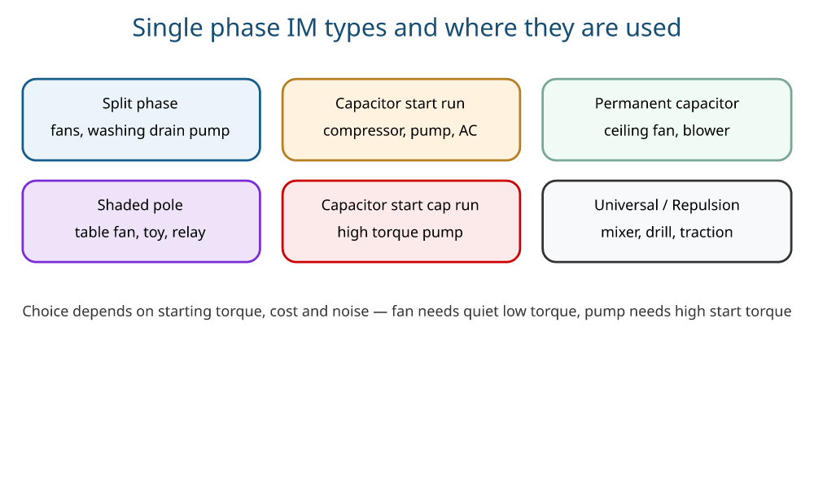
સિંગલ ફેઝ મોટર ક્યાં વાપરવી તે કેટલો સ્ટાર્ટ ટોર્ક જોઈએ તેના પર નક્કી થાય.
| પ્રકાર | સામાન્ય ઉપયોગ | કારણ |
|---|---|---|
| Split phase | વોશિંગ મશીન પંપ, નાનો લેથ, ડ્રિલ | ઓછા સ્ટાર્ટ ટોર્ક માં ચાલે, સસ્તી |
| Capacitor start induction run | એર કોમ્પ્રેસર, પાણી પંપ, ફ્રિજ કોમ્પ્રેસર | સ્ટાર્ટ ટોર્ક 2 થી 3 ગણો |
| Capacitor start capacitor run | સબમર્સિબલ પંપ, ભારે કન્વેયર | વધુ ટોર્ક વત્તા સરળ રનિંગ |
| Permanent capacitor | સીલિંગ પંખો, બ્લોઅર, કુલર | અવાજ ઓછો, સર્જ ઓછો |
| Shaded pole | ટેબલ પંખો, નાનું રમકડું, હેર ડ્રાયર | ખૂબ સસ્તી, નાનું ટોર્ક ચાલે |
| Universal | મિક્સર, વેક્યૂમ ક્લીનર, ડ્રિલ | AC DC બંને પર ઝડપી સ્પીડ |
Q.1 (b) Explain construction and working of capacitor start Induction run single phase Induction motor. (4 marks)Q.1 (b) Explain construction and working of capacitor start Induction run single phase Induction motor. (4 marks)4 marks૦૪ ગુણ
Construction: Stator has two windings 90° apart. Main winding thick wire many turns low resistance, auxiliary winding thin wire fewer turns high resistance plus series capacitor about 70 to 120 µF for 0.5 to 1 HP. Centrifugal switch in series with auxiliary opens at about 75% synchronous speed. Rotor is ordinary squirrel cage aluminium bars shorted by end rings.
Working: At start both windings carry current. Capacitor makes auxiliary current lead main by about 80 to 90°. Two phase shifted currents give rotating elliptical field → starting torque. Rotor bars cut field, emf induced, current flows, torque developed by interaction. Near 75% speed switch opens, motor runs only on main winding as single phase pulsating field is enough to keep rotation.
Capacitor chosen so phase shift near 90° for maximum start torque, then disconnected to avoid overheat.
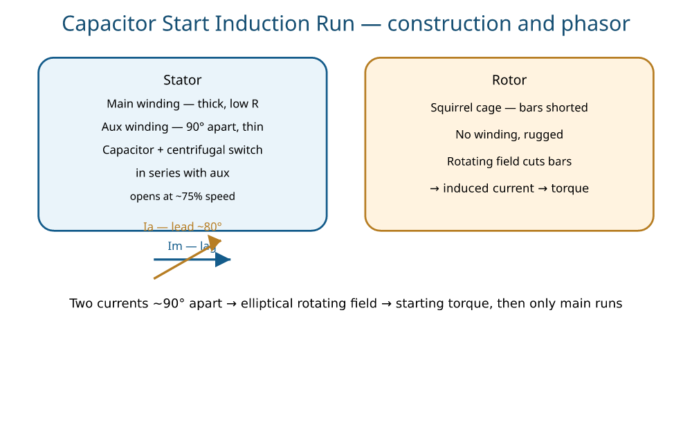
બનાવટ: સ્ટેટર માં બે વાઇન્ડિંગ 90° પર. Main વાઇન્ડિંગ જાડો તાર વધુ આંટા ઓછો અવરોધ, auxiliary વાઇન્ડિંગ પાતળો તાર ઓછા આંટા વધુ અવરોધ વત્તા શ્રેણી માં Capacitor 0.5 થી 1 HP માટે 70 થી 120 µF. Centrifugal switch શ્રેણી માં જે 75% સ્પીડે ખૂલી જાય. રોટર સામાન્ય squirrel cage એલ્યુમિનિયમ સળિયા.
કામ: શરૂઆત માં બંને વાઇન્ડિંગ માં કરંટ. Capacitor ને લીધે auxiliary કરંટ main થી 80 થી 90° આગળ. બે કરંટ વચ્ચે તફાવત થી ફરતું ફિલ્ડ બને → સ્ટાર્ટ ટોર્ક. રોટર સળિયા ફિલ્ડ કાપે, emf બને, કરંટ વહે, ટોર્ક આવે. 75% સ્પીડે switch ખૂલી જાય, પછી માત્ર main વાઇન્ડિંગ થી મોટર ચાલુ રહે.
Capacitor એવી રીતે પસંદ કરાય કે ફેઝ તફાવત 90° જેવો થાય ત્યારે સ્ટાર્ટ ટોર્ક સૌથી વધુ મળે, પછી ગરમ ન થાય માટે છૂટી પડે.
Q.1 (c) A 6 pole, 3-Ø, 440V, 50Hz Induction motor develops 8 HP at 955 rpm, stator losses amount to 400 watts and the friction losses 0.5 HP. Calculate Synchronous speed, Slip, Rotor output, Rotor input, Rotor cu loss and Efficiency of motor. (7 marks)Q.1 (c) A 6 pole, 3-Ø, 440V, 50Hz Induction motor develops 8 HP at 955 rpm, stator losses amount to 400 watts and the friction losses 0.5 HP. Calculate Synchronous speed, Slip, Rotor output, Rotor input, Rotor cu loss and Efficiency of motor. (7 marks)7 marks૦૭ ગુણ
Given: P=6, f=50Hz, N=955 rpm, shaft 8 HP, friction 0.5 HP, stator loss 400W. 1 HP =746W.
Check: Pg : Pm : rotor Cu = 1 : 1−s : s = 1 : 0.955 : 0.045 matches.
આપેલ: P=6, f=50Hz, N=955 rpm, shaft 8 HP, ઘર્ષણ 0.5 HP, stator loss 400W. 1 HP =746W.
તપાસ: Pg : Pm : rotor Cu = 1 : 1−s : s બરાબર બેસે.
Q.1 (c) OR Derive the torque equation for three phase Induction motor under running condition and derive the condition for maximum running torque. (7 marks)Q.1 (c) OR Derive the torque equation for three phase Induction motor under running condition and derive the condition for maximum running torque. (7 marks)7 marks૦૭ ગુણ
Running condition slip s small. Rotor induced emf at slip s: E2s = s E2 where E2 standstill rotor emf per phase. Rotor impedance at slip: Z2s = R2 + j s X2.
Condition for maximum: dT/ds =0. Put denominator D = R22 + s2X22. Numerator N = s. d/ds (s/D)=0 → D·1 − s·2sX22=0 → R22 + s2X22 −2s2X22=0 → R22= s2X22.
More R2 moves peak to higher slip → slip ring motor uses external R2 for high start torque.

રનિંગ માં slip s નાનો હોય. Rotor emf slip પર E2s = s E2. Rotor impedance Z2s = R2 + j s X2.
મહત્તમ ટોર્ક શરત: dT/ds =0 કરો. D = R22 + s2X22, N = s. d/ds (s/D)=0 → R22 = s2X22.
Q2 · Induction motor basics and starters
Q.2 (a) Define Synchronous speed, Slip and Slip Speed. (3 marks)Q.2 (a) Define Synchronous speed, Slip and Slip Speed. (3 marks)3 marks૦૩ ગુણ
Synchronous speed Ns: Speed of rotating magnetic field, Ns = 120 f / P where f frequency, P poles. Example 4 pole 50Hz →1200 rpm.
Slip s: How much rotor lags field, s = (Ns − N)/Ns per unit, in percent ×100. At standstill s=1, at sync s=0.
Slip speed: Difference Ns − N = s Ns in rpm. Rotor frequency fr = s f. Slip gives rotor emf and copper loss.
Synchronous speed Ns: ફરતા ફિલ્ડ ની ઝડપ, Ns = 120 f / P. જેમ 4 pole 50Hz તો 1200 rpm.
Slip s: રોટર ફિલ્ડ થી કેટલો પાછળ છે, s = (Ns − N)/Ns. ઊભી મોટરે s=1, sync પર s=0.
Slip speed: તફાવત Ns − N = s Ns rpm માં. Rotor frequency fr = s f. Slip થી જ rotor માં emf અને copper loss નક્કી થાય.
Q.2 (b) Apply double field revolving theory to explain why 1-Ø induction motor is not self-starting. (4 marks)Q.2 (b) Apply double field revolving theory to explain why 1-Ø induction motor is not self-starting. (4 marks)4 marks૦૪ ગુણ
Pulsating field splits into two rotating halves: Single phase flux Φm cos ωt stationary pulsating can be written as ½Φm rotating forward plus ½Φm rotating backward at synchronous speed.
At standstill both forward and backward fields cut rotor equally → produce equal opposite torques Tf = Tb → net zero. So rotor feels no start.
If rotor is given push, forward slip sf = s small → forward torque large, backward slip sb = 2 − s ≈2 → backward torque small → net in pushed direction and motor continues. Characteristic shows two slip torque curves crossing at zero.
Hence auxiliary phase or capacitor needed to create unbalanced rotating field at start.
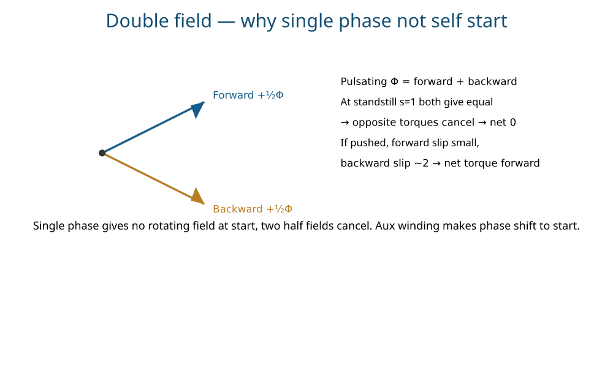
ધબકતું ફિલ્ડ બે અડધા ફરતા ફિલ્ડ માં વહેંચાય: સિંગલ ફેઝ Φm cos ωt સ્થિર ધબકે તે ½Φm આગળ અને ½Φm પાછળ ફરતા બરાબર છે.
ઊભી સ્થિતિ માં બંને આગળ અને પાછળ ના ફિલ્ડ એકસરખું રોટર કાપે → બંને સરખો સામ સામે ટોર્ક Tf = Tb → ચોખ્ખું શૂન્ય. તેથી જાતે ચાલુ ન થાય.
જો હાથ થી ધક્કો મારો તો આગળ ની slip sf = s નાની → આગળ ટોર્ક મોટો, પાછળ ની slip sb = 2 − s ≈2 → પાછળ ટોર્ક નાનો → ચોખ્ખું ધક્કા તરફ અને મોટર ચાલુ રહે.
તેથી સ્ટાર્ટ માટે auxiliary ફેઝ કે Capacitor થી અસંતુલિત ફરતું ફિલ્ડ બનાવવું પડે.
Q.2 (c) Explain D.O.L Starter with necessary diagrams. (7 marks)Q.2 (c) Explain D.O.L Starter with necessary diagrams. (7 marks)7 marks૦૭ ગુણ
DOL = Direct On Line: Motor direct to 415V via contactor and overload relay. Used upto about 5 HP where supply can take starting current 5 to 7 times full load.
- Power circuit: MCCB / fuses → contactor main contacts → overload relay heaters → motor terminals.
- Control circuit: Coil energised through Stop NC button, Start NO button momentary, hold on auxiliary NO contact seals coil. Overload NC in series trips and opens coil on overcurrent, no volt release if supply fails.
- Working: Press START → coil pulls → main contacts close → motor runs, auxiliary keeps coil latched. Press STOP or OLR trip → coil drops → motor off. Needs reset.
Advantages simple cheap, disadvantage heavy inrush voltage dip. For larger motor use star delta or soft start.
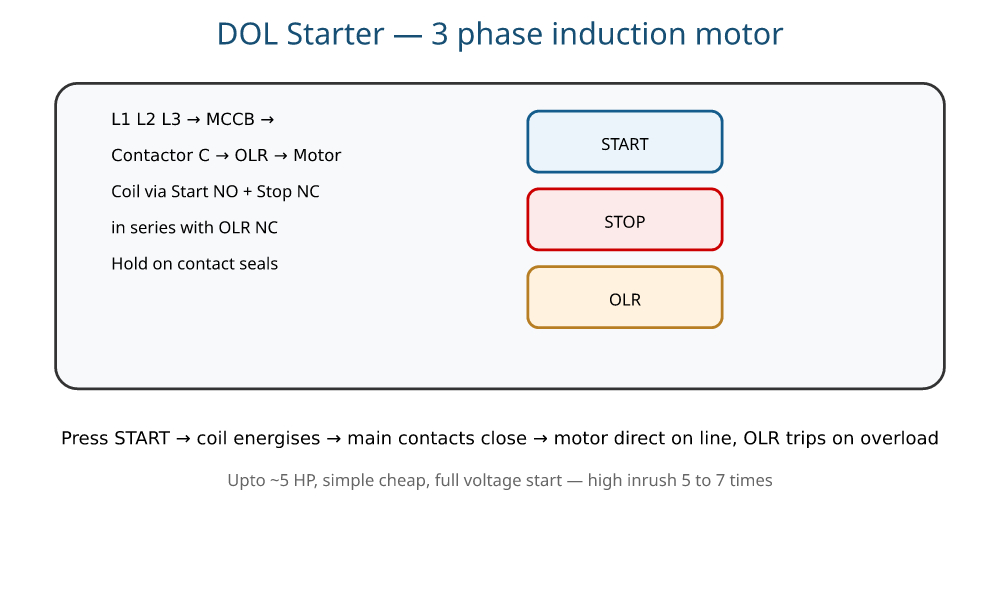
DOL = Direct On Line: મોટર સીધી 415V પર contactor અને overload relay થી. લગભગ 5 HP સુધી જ્યાં સપ્લાય સ્ટાર્ટ કરંટ 5 થી 7 ગણો સહન કરી શકે.
- પાવર સર્કિટ: MCCB / fuse → contactor મુખ્ય contact → overload relay heater → મોટર.
- કંટ્રોલ સર્કિટ: coil Stop NC button, Start NO button ક્ષણિક, hold on NO contact coil ને પકડી રાખે. Overload NC શ્રેણી માં વધુ કરંટ કે સપ્લાય જાય તો coil છોડી દે.
- કામ: START દબાવો → coil ખેંચાય → મુખ્ય contact બંધ → મોટર ચાલે, auxiliary પકડી રાખે. STOP કે OLR trip → coil છૂટે → મોટર બંધ.
ફાયદો સસ્તું સરળ, ગેરલાભ જોરદાર inrush થી વોલ્ટેજ ઘટે. મોટી મોટર માટે star delta કે soft start વાપરો.
Q.2 (a) OR State Working Principle of three phase induction motor. (3 marks)Q.2 (a) OR State Working Principle of three phase induction motor. (3 marks)3 marks૦૩ ગુણ
Principle is electromagnetic induction plus rotating field. Three phase stator fed with 120° currents makes rotating magnetic field at Ns =120f/P. This field sweeps over stationary squirrel cage rotor bars at slip speed, induces emf by Faraday, rotor shorted so current flows. Rotor current makes its own field which interacts with stator field giving force by Lorentz F = B I L. Rotor tries to catch field but never reaches sync because at sync slip zero no emf. So runs slightly below Ns with slip providing torque.
સિદ્ધાંત Induction વત્તા ફરતું ફિલ્ડ. ત્રણ ફેઝ સ્ટેટર માં 120° કરંટ ફરતું ફિલ્ડ બનાવે Ns =120f/P પર. આ ફિલ્ડ રોટર સળિયા ને slip speed એ કાપે, Faraday થી emf બને, રોટર short તેથી કરંટ વહે. રોટર કરંટ પોતાનું ફિલ્ડ બનાવે જે સ્ટેટર ફિલ્ડ સાથે આંતરક્રિયા કરી F = B I L બળ આપે. રોટર ફિલ્ડ ને પકડવા દોડે પણ sync પર slip શૂન્ય થાય તેથી કદી પહોંચે નહિ, થોડું નીચે slip થી ટોર્ક સાથે ચાલે.
Q.2 (b) OR Develop construction and flux distribution diagram of single phase Shaded pole induction motor and explain it. (4 marks)Q.2 (b) OR Develop construction and flux distribution diagram of single phase Shaded pole induction motor and explain it. (4 marks)4 marks૦૪ ગુણ
Construction: Slotted stator with salient poles, each pole face partly surrounded by one turn copper shading ring shorted. Single main winding fed. Rotor squirrel cage.
Flux distribution: When main flux rises, induced current in shading ring opposes change in its covered part, so that part flux lags unshaded part by about 30 to 50°. Net flux is non uniform moving from unshaded to shaded tip → gives small travelling wave → low starting torque.
Direction always unshaded to shaded, cannot reverse unless shading mechanically swapped. Used for very small low torque loads.
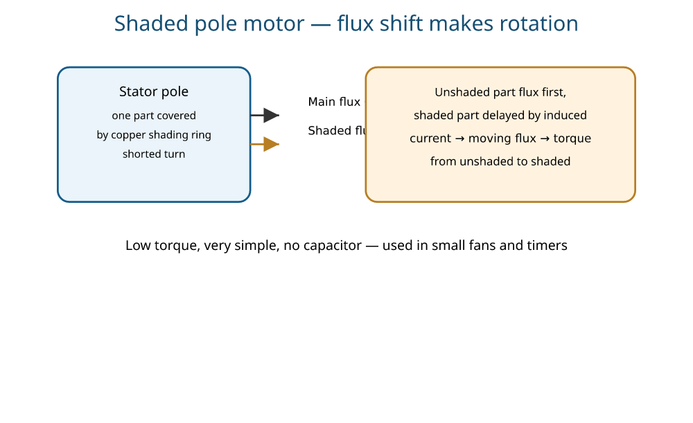
બનાવટ: સાલિયંટ pole વાળો સ્ટેટર, દરેક pole નો થોડો ભાગ એક આંટા ના તાંબા shading ring થી ઢંકાયેલો short. એક જ main વાઇન્ડિંગ. રોટર squirrel cage.
ફ્લક્સ વિતરણ: Main ફ્લક્સ વધે ત્યારે shading ring માં induced કરંટ ઢંકાયેલા ભાગ માં ફેરફાર ને રોકે, તેથી તે ભાગ નો ફ્લક્સ ખુલ્લા ભાગ થી 30 થી 50° પાછળ. ચોખ્ખો ફ્લક્સ ખુલ્લા થી ઢંકાયેલા તરફ સરકે → નાની travelling wave → ઓછો સ્ટાર્ટ ટોર્ક.
દિશા હંમેશા ખુલ્લા થી ઢંકાયેલા તરફ, યાંત્રિક રીતે ring ફેરવ્યા વગર ઊલટી ન થાય. ખૂબ નાના લોડ માટે.
Q.2 (c) OR Explain production of rotating magnetic field in 3-phase Induction motor due to 3-phase supply with diagrams. (7 marks)Q.2 (c) OR Explain production of rotating magnetic field in 3-phase Induction motor due to 3-phase supply with diagrams. (7 marks)7 marks૦૭ ગુણ
Three coils R Y B placed 120° mechanical with currents Ir = Im sin ωt, Iy = Im sin (ωt−120°), Ib = Im sin (ωt−240°). Each makes pulsating flux along its axis Φr = Φm sin ωt etc.
Vector sum at any instant: Resolve along X Y. Using sine identity sum is constant 1.5 Φm and angle ωt. So resultant is not pulsating but steady magnitude rotating at ω rad/s. Proof via phasor addition or graphical waveforms at ωt=0°, 60°, 120° shows resultant rotates.
Speed Ns =120f/P electrical, direction R→Y→B. Interchange any two lines → phase sequence reverses → field reverses → motor reverses. This is why swapping motor leads changes direction.
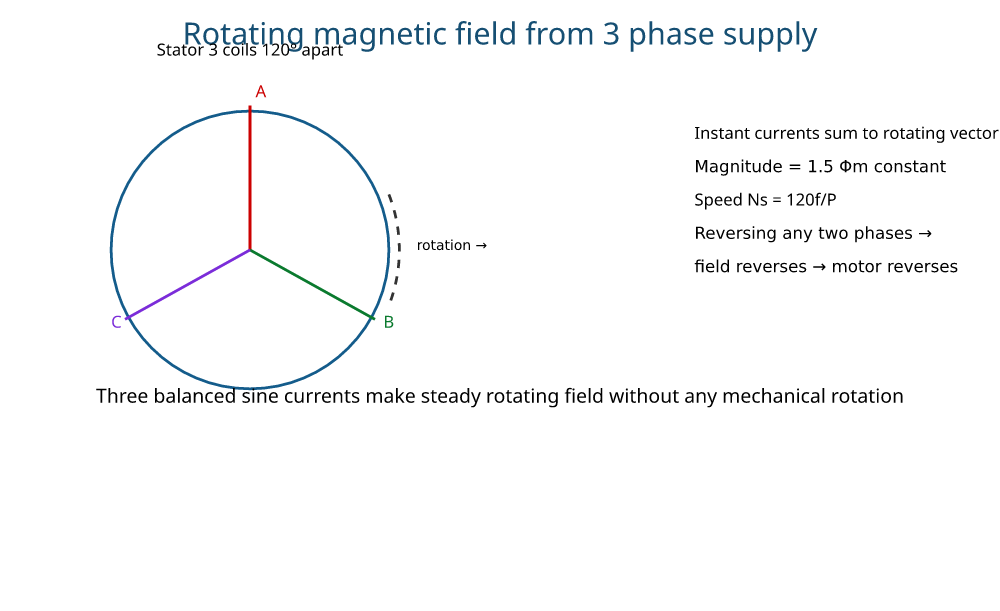
ત્રણ coil R Y B 120° પર, કરંટ Ir = Im sin ωt, Iy = Im sin (ωt−120°), Ib = Im sin (ωt−240°). દરેક પોતાની ધરી પર ધબકતો ફ્લક્સ બનાવે Φr = Φm sin ωt વગેરે.
કોઈ પણ ક્ષણે સદિશ સરવાળો: X Y પર છૂટો પાડો. સાઇન ગુણધર્મ થી સરવાળો હંમેશા 1.5 Φm અને ખૂણો ωt. તેથી પરિણામ ધબકતું નથી પણ સ્થિર કદનું ω ઝડપે ફરતું રહે. ωt=0°, 60°, 120° પર ગ્રાફ થી પણ એ જ દેખાય.
ઝડપ Ns =120f/P, દિશા R→Y→B. કોઈ બે વાયર અદલાબદલી કરો → ફેઝ ક્રમ ઊલટો → ફિલ્ડ ઊલટું → મોટર ઊલટી ફરે. તેથી જ લીડ બદલવાથી દિશા બદલાય.
Q3 · Synchronous motors and alternators
Q.3 (a) State the application of Synchronous motor. (3 marks)Q.3 (a) State the application of Synchronous motor. (3 marks)3 marks૦૩ ગુણ
Used where constant speed or power factor correction needed:
- Power factor correction — over excited runs as synchronous condenser in large mills to improve plant Pf.
- Constant speed drives unaffected by load — rolling mills, paper making, cement kiln, reciprocating pumps and compressors.
- Low speed large drives with no slip — crushers, ball mills, large fans and blowers.
- Frequency control and timing — synchronous clocks, special drives.
- Voltage regulation in transmission — condenser mode absorbs or supplies kVAR.
જ્યાં એકધારી ઝડપ કે power factor સુધારવો હોય ત્યાં:
- Power factor સુધારણા — વધુ excitation પર synchronous condenser તરીકે મિલ માં Pf સુધારે.
- લોડ બદલાય તો પણ ઝડપ એક જ — રોલિંગ મિલ, પેપર, સિમેન્ટ ભઠ્ઠી, પંપ કોમ્પ્રેસર.
- ઓછી ઝડપ મોટો ડ્રાઇવ slip વગર — ક્રશર, બોલ મિલ, મોટા પંખા.
- ફ્રિકવન્સી કંટ્રોલ ટાઇમિંગ — ઘડિયાળ, ખાસ ડ્રાઇવ.
- ટ્રાન્સમિશન વોલ્ટેજ નિયંત્રણ — condenser તરીકે kVAR આપે કે લે.
Q.3 (b) Explain Synchronization of alternator with infinite bus bar. (4 marks)Q.3 (b) Explain Synchronization of alternator with infinite bus bar. (4 marks)4 marks૦૪ ગુણ
Infinite bus is large system where V and f do not change when new machine added. Conditions before closing breaker:
- Terminal voltage magnitude equal — adjust excitation.
- Frequency equal — adjust prime mover speed to Ns.
- Phase sequence same — check motor rotation.
- Phase angle coincidence — instant of closing when voltages in phase.
Methods: Lamp dark/bright: three lamps between bus and machine, dark when in phase, bright when out, all dark together → correct sequence. Synchroscope pointer at 12 o clock steady → in sync, rotating fast means frequency mismatch. Automatic synchroniser does same.
After sync machine floats, increase steam to take active power, increase excitation to supply kVAR.
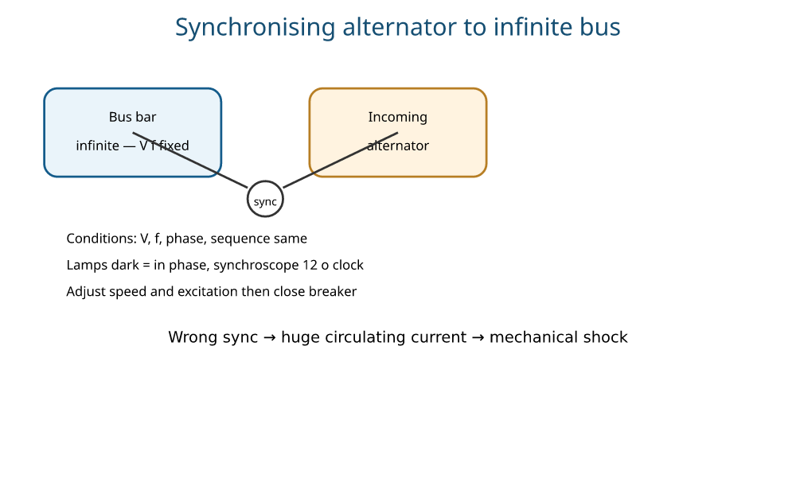
Infinite bus એટલે મોટી સિસ્ટમ જ્યાં નવી મશીન જોડાય તો V f બદલાય નહિ. બ્રેકર બંધ કરતા પહેલા શરતો:
- ટર્મિનલ વોલ્ટેજ સરખું — excitation ગોઠવો.
- ફ્રિકવન્સી સરખી — prime mover ઝડપ Ns પર લાવો.
- ફેઝ ક્રમ એક જ — મોટર ફરવાની તપાસ.
- ફેઝ ખૂણો મળતો આવે તે ક્ષણે બંધ કરો.
રીત: Lamp dark/bright — બસ અને મશીન વચ્ચે ત્રણ lamp, ફેઝ માં હોય તો અંધારું, બહાર તો તેજ, ત્રણ સાથે અંધારું → ક્રમ સાચો. Synchroscope કાંટો 12 વાગ્યે સ્થિર → sync, ઝડપી ફરે તો frequency ફેર.
sync પછી મશીન તરતું રહે, steam વધારો તો active power લે, excitation વધારો તો kVAR આપે.
Q.3 (c) Compare Projected pole and Cylindrical pole type of rotor in alternator. (7 marks)Q.3 (c) Compare Projected pole and Cylindrical pole type of rotor in alternator. (7 marks)7 marks૦૭ ગુણ
| Point | Salient projected pole | Cylindrical non salient |
|---|---|---|
| Shape | Poles projecting out bolted on spider | Solid cylinder slots for field winding |
| Diameter vs length | Large diameter short axial | Small diameter long axial |
| Speed | Low 125 to 500 rpm, many poles 10 to 64 | High 1500/3000 rpm, 2 or 4 poles |
| Prime mover | Hydro, diesel, wind slow | Steam, gas turbo fast |
| Airgap | Non uniform max at pole centre | Uniform except slots |
| Mechanical | Needs damper winding for hunting, less robust at high centrifugal | Very robust retains balance, no damper needed but often provided |
| Cost | More poles construction heavy | Forging costly but compact |
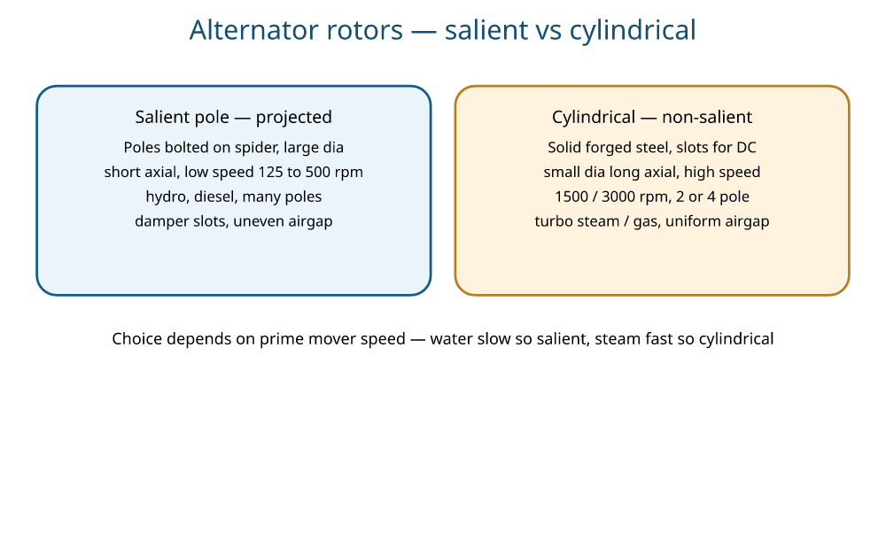
| મુદ્દો | Salient projected pole | Cylindrical |
|---|---|---|
| આકાર | pole બહાર નીકળેલા spider પર | નક્કર સિલિન્ડર માં slot વાઇન્ડિંગ |
| વ્યાસ લંબાઈ | મોટો વ્યાસ ટૂંકી લંબાઈ | નાનો વ્યાસ લાંબી લંબાઈ |
| ઝડપ | ઓછી 125 થી 500 rpm, pole વધુ | વધુ 1500/3000 rpm, 2 કે 4 pole |
| prime mover | હાઇડ્રો ડીઝલ ધીમું | સ્ટીમ ગેસ ઝડપી |
| airgap | અસમાન pole વચ્ચે વધુ | સમાન slot સિવાય |
| મજબૂતી | hunting માટે damper જોઈએ, વધુ ઝડપે નબળું | ખૂબ મજબૂત સંતુલિત |
Q.3 (a) OR Define Pitch factor and Distribution factor for alternator. (3 marks)Q.3 (a) OR Define Pitch factor and Distribution factor for alternator. (3 marks)3 marks૦૩ ગુણ
Full pitch 180° gives Kp=1, short pitch reduces harmonics but slightly less fundamental.
Distributed winding gives smoother sine but Kd less than 1, e.g. q=3 β=20° →0.96.
પૂરો pitch 180° તો Kp=1, ટૂંકો કરવાથી harmonic ઘટે પણ થોડું મૂળ ઓછું.
વહેંચાયેલું વાઇન્ડિંગ વધુ સાઇન જેવું પણ Kd 1 થી ઓછો, જેમ q=3 β=20° →0.96.
Q.3 (b) OR Compare Synchronous motors and induction motor. (4 marks)Q.3 (b) OR Compare Synchronous motors and induction motor. (4 marks)4 marks૦૪ ગુણ
| Point | Synchronous motor | Induction motor |
|---|---|---|
| Speed | Exactly sync Ns =120f/P, no slip | Slightly below Ns with slip |
| Excitation | Needs DC field, not self starting needs pony or damper | Self starting, no DC needed |
| Power factor | Controllable lag to lead by field, can correct Pf | Always lag, low at light load |
| Cost | Higher for small sizes, economical above few hundred kW low speed | Cheap rugged for all small to medium |
| Torque | Sensitive to sudden load may fall out of sync hunting | More tolerant slip adjusts |
| મુદ્દો | Synchronous | Induction |
|---|---|---|
| ઝડપ | બરાબર sync Ns =120f/P, slip શૂન્ય | Ns થી થોડી ઓછી slip સાથે |
| Excitation | DC field જોઈએ, જાતે ચાલુ ન થાય | જાતે ચાલુ, DC ન જોઈએ |
| Power factor | field થી lag થી lead સુધી કંટ્રોલ, Pf સુધારે | હંમેશા lag, હળવા લોડે ઓછો |
| ખર્ચ | નાની માં મોંઘી, મોટી ધીમી માં સસ્તી પડે | બધી નાની મધ્યમ માં સસ્તી મજબૂત |
| ટોર્ક | અચાનક લોડે sync બહાર hunting | slip થી સહનશીલ |
Q.3 (c) OR Explain V-curves and inverted V-curves of Synchronous motor. (7 marks)Q.3 (c) OR Explain V-curves and inverted V-curves of Synchronous motor. (7 marks)7 marks૦૭ ગુણ
At constant mechanical load, varying field current If changes excitation.
- Under excited: Ef less than V → motor draws lagging current to supply magnetising kVAR → Pf lag.
- Normal excited: Ef ≈ V → armature current minimum → Pf unity.
- Over excited: Ef greater than V → motor draws leading current, supplies kVAR to system → Pf lead.
V curve: Plot Ia versus If at fixed load is V shaped, minimum at unity Pf. Higher load shifts curve up but same shape.
Inverted V: Plot Pf versus If peaks at unity at normal excitation, falls both sides lag on left lead on right.
Used to set synchronous condenser excitation for desired Pf correction.
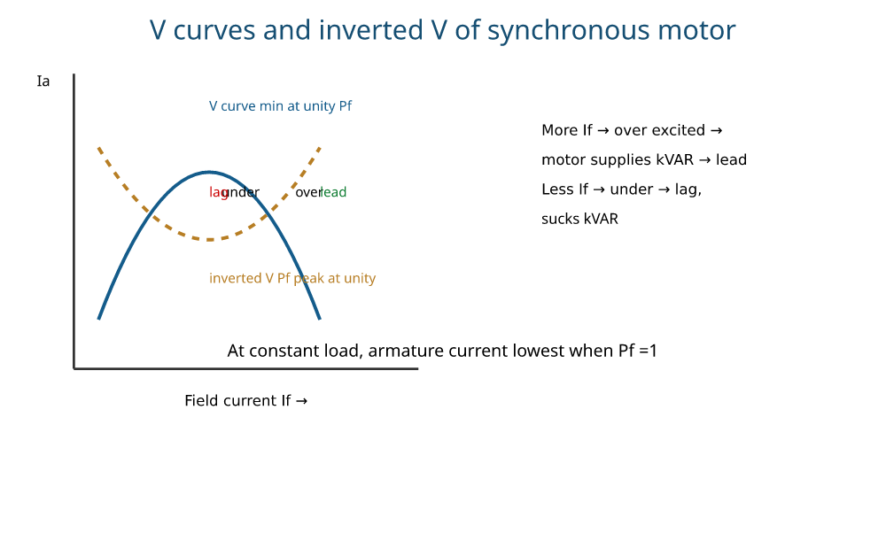
એક જ લોડ પર field current If બદલો તો excitation બદલાય.
- Under excited: Ef V થી ઓછું → lagging કરંટ લે kVAR લેવા → Pf lag.
- Normal: Ef ≈ V → armature કરંટ સૌથી ઓછો → Pf એક.
- Over excited: Ef V થી વધુ → leading કરંટ, સિસ્ટમ ને kVAR આપે → Pf lead.
V curve: Ia વિરુદ્ધ If એક જ લોડે V આકાર, સૌથી નીચું unity Pf પર. લોડ વધે તો આખો V ઉપર જાય.
Inverted V: Pf વિરુદ્ધ If ઉલ્ટો V, unity પર ટોચ, બંને બાજુ ઘટે lag ડાબે lead જમણે.
Synchronous condenser ને કેટલો Pf જોઈએ તે If થી સેટ કરાય.
Q4 · Alternator parallel and hunting
Q.4 (a) State necessity of parallel operation of Alternators and List conditions of parallel operation. (3 marks)Q.4 (a) State necessity of parallel operation of Alternators and List conditions of parallel operation. (3 marks)3 marks૦૩ ગુણ
Necessity: Demand varies, one large cannot run efficiently at light load; parallel gives reliability if one fails, allows maintenance, future expansion, better efficiency by switching on as per load, high overload capacity.
Conditions to parallel: Same voltage magnitude, same frequency, same phase sequence, voltages in phase at closing instant. Violating gives large cross current and mechanical jerk.
જરૂર: માંગ બદલાય, મોટો એક હળવા લોડે કાર્યક્ષમ નહિ, પેરેલલ થી એક બગડે તો બીજો ચાલુ, જાળવણી થાય, વિસ્તરણ થાય, લોડ પ્રમાણે ચાલુ કરી કાર્યક્ષમતા વધે, overload ક્ષમતા વધુ.
શરતો: વોલ્ટેજ સરખો, ફ્રિકવન્સી સરખી, ફેઝ ક્રમ એક જ, બંધ કરતી ઘડીએ વોલ્ટેજ ફેઝ માં. નહિ તો મોટો cross કરંટ અને ઝટકો આવે.
Q.4 (b) Develop vector diagram of Alternator on lagging and leading power factor. (4 marks)Q.4 (b) Develop vector diagram of Alternator on lagging and leading power factor. (4 marks)4 marks૦૪ ગુણ
Take V as reference. Ia lags V by φ for lag Pf, leads for lead. Drop Ia Ra in phase with Ia, drop j Ia Xs 90° ahead of Ia.
Lagging: Ia behind V → jIaXs adds more to V → Ef larger and angle δ load angle forward. Leading: Ia ahead → jIaXs partially subtracts → Ef smaller. This shows why lag load needs more field.
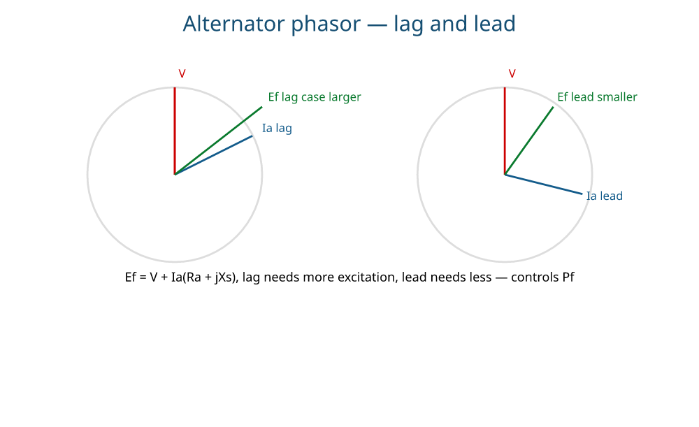
V ને reference લો. Ia lag તો V થી φ પાછળ, lead તો આગળ. Drop Ia Ra Ia ની દિશા માં, j Ia Xs Ia થી 90° આગળ.
Lagging: Ia પાછળ → jIaXs V માં વધુ ઉમેરે → Ef મોટું, δ આગળ. Leading: Ia આગળ → jIaXs થોડું બાદ કરે → Ef નાનું. તેથી lag લોડે વધુ field જોઈએ.
Q.4 (c) Derive an EMF equation of Alternator (7 marks)Q.4 (c) Derive an EMF equation of Alternator (7 marks)7 marks૦૭ ગુણ
Assume full pitch concentrated first. Flux per pole Φ wb, P poles, N rpm → frequency f = PN/120.
Each conductor cuts flux 2Φ per revolution. Time per rev 60/N. Average emf per conductor = 2Φ / (60/N/ P?) Simpler per turn: Flux cut per revolution per turn =2Φ, turns T per phase gives total flux linkage 2ΦT. Frequency f revolutions per second.
Correct for winding: Short pitch reduces by Kp =cos ε/2, distributed reduces by Kd = sin(qβ/2)/(q sin β/2). T is turns per phase = conductors per phase /2.
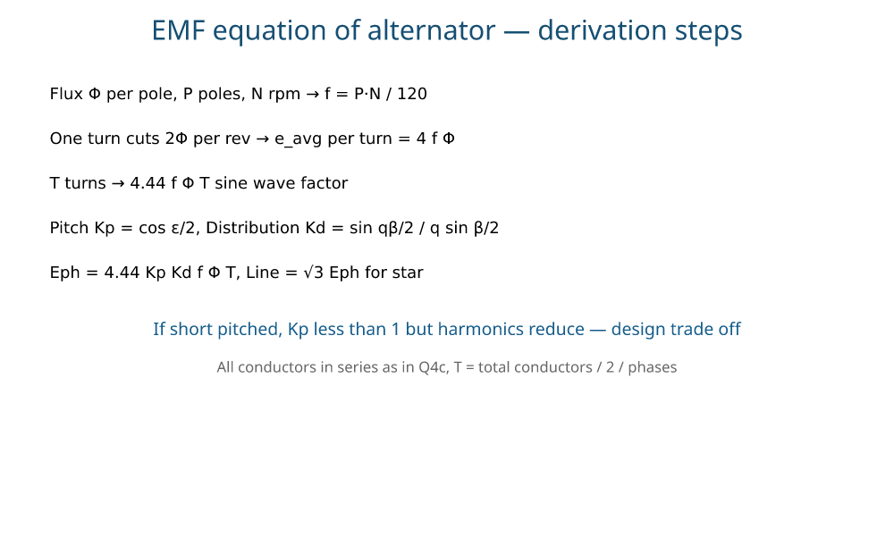
પહેલા પૂરો pitch એક જગ્યા માનો. Flux per pole Φ, P pole, N rpm → f = PN/120.
દરેક વાહક 2Φ કાપે દર ફેરે. સરેરાશ emf per turn =4 f Φ, સાઇન માટે rms 1.11 ગણું.
વાઇન્ડિંગ સુધારો: ટૂંકો pitch Kp =cos ε/2 થી ઘટે, વહેંચાયેલું Kd = sin(qβ/2)/(q sin β/2) થી ઘટે. T = conductors per phase /2.
Q.4 (a) OR Define Hunting and its effect in Synchronous motor. (3 marks)Q.4 (a) OR Define Hunting and its effect in Synchronous motor. (3 marks)3 marks૦૩ ગુણ
Hunting is oscillation of rotor about synchronous position due to sudden load change, fault or pulsating torque. Rotor angle δ swings to and fro like pendulum, field and damper currents oscillate, power surges.
Effects: Large current swings, voltage flicker, mechanical stress, may lose synchronism and stall, noisy vibration. Damper cage damps by inducing current opposing motion. Flywheel effect matters.
Hunting એટલે sync સ્થાન ની આસપાસ રોટર નું દોલન — અચાનક લોડ, fault કે ધબકતા ટોર્ક થી. રોટર ખૂણો δ લોલક જેમ આગળ પાછળ હાલે, કરંટ વધ ઘટ, power ધબકે.
અસર: કરંટ ઝોલા, વોલ્ટેજ ઝબક, યાંત્રિક તાણ, sync છૂટી stall થઈ શકે, અવાજ કંપન. Damper cage ગતિ સામે કરંટ બનાવી રોકે.
Q.4 (b) OR A 3-Ø, 3.3 KV star connected alternator has a full load current of 100 A under short circuit condition. It takes 5A field current to produce full load short circuit current. The line voltage of the open circuit emf on the same excitation is 900 Volt. Armature resistance is 0.9 ohm per phase. Calculate the synchronous reactance per phase. (4 marks)Q.4 (b) OR A 3-Ø, 3.3 KV star connected alternator has a full load current of 100 A under short circuit condition. It takes 5A field current to produce full load short circuit current. The line voltage of the open circuit emf on the same excitation is 900 Volt. Armature resistance is 0.9 ohm per phase. Calculate the synchronous reactance per phase. (4 marks)4 marks૦૪ ગુણ
OCC and SCC at same If =5A give Zs.
If Ra neglected Xs ≈Zs ≈5.20Ω. This is unsaturated value.
એક જ If =5A પર OCC અને SCC થી Zs.
Ra અવગણો તો Xs ≈5.20Ω. આ unsaturated મૂલ્ય.
Q.4 (c) OR A 3-Ø star connected alternator has 8 poles and is driven at 750 rpm. The stator has 3 slots per pole phase and 15 conductors per slot. useful flux per pole is 54mwb. Calculate the open circuit line voltage. Assume that all the conductors per phases are connected in series. (7 marks)Q.4 (c) OR A 3-Ø star connected alternator has 8 poles and is driven at 750 rpm. The stator has 3 slots per pole phase and 15 conductors per slot. useful flux per pole is 54mwb. Calculate the open circuit line voltage. Assume that all the conductors per phases are connected in series. (7 marks)7 marks૦૭ ગુણ
Data: P=8, N=750 rpm → f = PN/120 =8×750/120=50Hz. Φ=54mWb=0.054Wb. Slots per pole per phase q=3 → total slots = q·P·3 =3·8·3=72. Conductors per slot 15 → total Z =72·15=1080. Per phase Zph =1080/3=360 → turns T =Zph/2=180. Full pitch Kp≈1.
If Kp slightly less due to chording, value ~3.4 to 3.6kV acceptable.
ડેટા: P=8, N=750 rpm → f =8×750/120=50Hz. Φ=0.054Wb. q=3 → કુલ slot =3·8·3=72. કુલ વાહક Z =72·15=1080. per phase Zph=360 → T =180. Kp≈1.
થોડો chording હોય તો ~3.4 થી 3.6kV બરાબર.
Q5 · Slip, power flow and cage vs slip ring
Q.5 (a) A 4 pole 60 Hz, 3-Ø star connected Induction motor has full load slip of 3%. Find full load speed of the motor. (3 marks)Q.5 (a) A 4 pole 60 Hz, 3-Ø star connected Induction motor has full load slip of 3%. Find full load speed of the motor. (3 marks)3 marks૦૩ ગુણ
Q.5 (b) List different methods to measure slip and explain anyone. (4 marks)Q.5 (b) List different methods to measure slip and explain anyone. (4 marks)4 marks૦૪ ગુણ
Methods: Direct tachometer, stroboscopic disc, rotor frequency measurement, belt flicker count, comparison of supply and rotor counters, smartphone tacho app.
Example — Tachometer plus frequency: Measure supply f from nameplate 50Hz gives Ns=120f/P. Measure rotor N with digital tacho on shaft. Then slip s=(Ns−N)/Ns. Rotor frequency can also be measured by low frequency voltmeter on slip rings for wound rotor → fr and s=fr/f. Simple and used in lab.
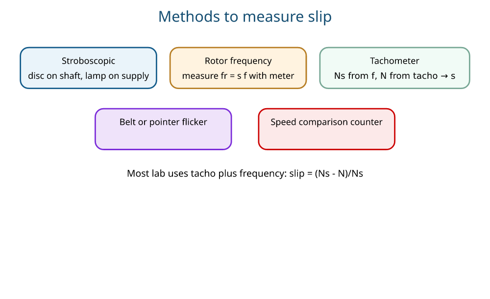
રીતો: સીધો tachometer, stroboscopic disc, rotor frequency માપ, belt flicker ગણતરી, counter સરખામણી.
ઉદાહરણ — Tachometer વત્તા frequency: નેમ પ્લેટ થી f → Ns=120f/P. shaft પર digital tacho થી N માપો. પછી s=(Ns−N)/Ns. wound rotor માં slip ring પર ઓછા Hz વોલ્ટમીટર થી fr માપી s=fr/f કરો. લેબ માં સૌથી સરળ.
Q.5 (c) Explain Torque slip characteristic of 3-Ø Induction motor. (7 marks)Q.5 (c) Explain Torque slip characteristic of 3-Ø Induction motor. (7 marks)7 marks૦૭ ગુણ
Regions: Motoring 0 <s <1 torque rises initially linear, peaks at s=R2/X2 called breakdown torque about 2 to 3 times full load, then falls to starting torque at s=1. Generating s negative torque negative. Braking 1<s<2 positive torque opposite rotation.
Stable zone 0 to sm: If load increases slip increases torque increases → returns. Unstable beyond peak load increase slips more but torque drops → stall.
High rotor resistance shifts peak to higher slip raising start torque but more copper loss. Squirrel cage low R2 low start, slip ring can add external R2 for high start.
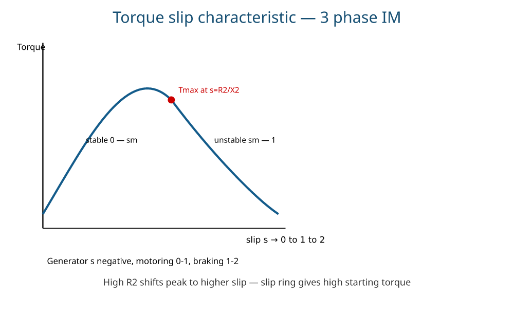
વિસ્તાર: Motoring 0 <s <1 ટોર્ક શરૂ માં સીધો વધે, s=R2/X2 પર breakdown ટોર્ક ફુલ લોડ થી 2 થી 3 ગણો, પછી s=1 સ્ટાર્ટ સુધી ઘટે. Generating s નકારાત્મક, Braking 1 થી 2.
સ્થિર વિસ્તાર 0 થી sm: લોડ વધે → slip વધે → ટોર્ક વધે → પાછો સ્થિર. peak પછી અસ્થિર — લોડ વધે પણ ટોર્ક ઘટે → stall.
વધુ R2 peak ને વધુ slip તરફ ખસેડે, સ્ટાર્ટ ટોર્ક વધે પણ copper loss વધે. squirrel માં ઓછો R2 ઓછો સ્ટાર્ટ, slip ring માં બહાર R2 નાખી સ્ટાર્ટ વધારાય.
Q.5 (a) OR Develop Equivalent circuit of 3-Ø Induction motor. (3 marks)Q.5 (a) OR Develop Equivalent circuit of 3-Ø Induction motor. (3 marks)3 marks૦૩ ગુણ
Per phase referred to stator. Stator R1 X1 series, magnetising branch Xm parallel with core loss Rc, rotor referred R2/s X2 series. At standstill s=1, at no load s≈0 open.
Supply balances copper, iron and output. Tests: no load gives Xm, blocked rotor gives R01 X01.
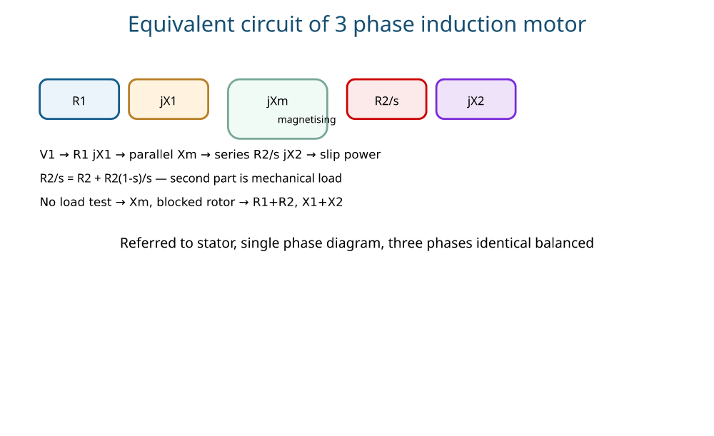
Per phase સ્ટેટર તરફ. સ્ટેટર R1 X1 શ્રેણી, magnetising Xm સમાંતર, રોટર R2/s X2 શ્રેણી. s=1 ઊભું, s≈0 હળવું.
No load થી Xm, blocked rotor થી R01 X01 મળે.
Q.5 (b) OR Draw and Explain Power stages in an induction motor. (4 marks)Q.5 (b) OR Draw and Explain Power stages in an induction motor. (4 marks)4 marks૦૪ ગુણ
Flow: Electrical input Pin =3V1 I1 cosφ → minus stator copper and iron → airgap power Pg =Pin − stator losses.
Pg crosses to rotor → minus rotor copper sPg → mechanical Pm =(1−s)Pg.
Pm minus friction windage → shaft Pout. Relation Pg : rotor Cu : Pm =1 : s : 1−s.
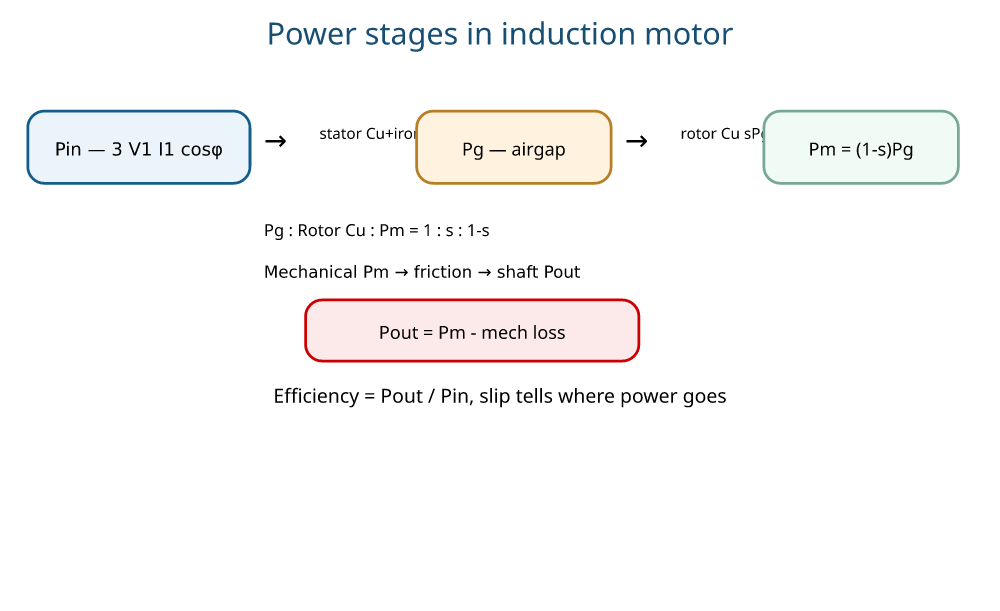
પ્રવાહ: Pin =3V1 I1 cosφ → stator copper iron બાદ → Pg =Pin − stator loss.
Pg રોટર માં → rotor copper sPg બાદ → Pm =(1−s)Pg.
Pm માં ઘર્ષણ બાદ → shaft Pout. ગુણોત્તર Pg : rotor Cu : Pm =1 : s : 1−s.
Q.5 (c) OR Compare Squirrel cage and slip ring induction motor. (7 marks)Q.5 (c) OR Compare Squirrel cage and slip ring induction motor. (7 marks)7 marks૦૭ ગુણ
| Point | Squirrel cage | Slip ring wound rotor |
|---|---|---|
| Rotor | Bars shorted, simple rugged | Wound coils to slip rings, brushes |
| Start torque | Low 1.5 times, high current 5 to 7 times | High upto 2.5 times with external R, low current |
| Speed control | Limited pole change or VFD only | Wide by rotor resistance, smooth |
| Maintenance | Almost none, cheap | Brush slip wear, needs care, cost more |
| Efficiency | Higher, low rotor Cu | Lower due to external loss |
| Use | Fans, pumps, compressors general | Cranes, hoists, crushers heavy start |
| મુદ્દો | Squirrel cage | Slip ring |
|---|---|---|
| રોટર | સળિયા short, સરળ મજબૂત | coil slip ring brush |
| સ્ટાર્ટ ટોર્ક | ઓછો 1.5 ગણો, કરંટ 5 થી 7 ગણો | વધુ 2.5 ગણો બહાર R થી, કરંટ ઓછો |
| ઝડપ કંટ્રોલ | pole કે VFD જ | રોટર અવરોધ થી પહોળું |
| જાળવણી | લગભગ શૂન્ય, સસ્તી | brush ઘસારો, ખર્ચ વધુ |
| કાર્યક્ષમતા | વધુ | બહાર loss થી ઓછી |
| ઉપયોગ | પંખા પંમ કોમ્પ્રેસર | ક્રેન હોઇસ્ટ ક્રશર |